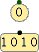

| Library: | Wiring |
| Introduced: | 2.0.3 (in Base library, moved to Wiring in 2.7.0) |
| Appearance: |  |
A probe is an element that simply displays the value at a given point in a circuit. It does not itself interact with other components.
In most respects, the probe component duplicates the functionality found in a Pin component configured as an output pin. The difference is that if the circuit is used as a subcircuit component, then an output pin will be a part of that interface, whereas a probe is not. They also are different in that the probe automatically adapts its width to whatever it is connected to. Graphically, a probe looks like a pin but has a thinner, gray border and a yellow background.
A probe component has only one pin, which acts as an input to the probe. The width that this pin accepts is adaptive: The probe will adapt to inputs of any width.
When the component is selected or being added,
the arrow keys alter its Facing
attribute.
None.
None, but Probe components will be silently ignored during FPGA synthesis.